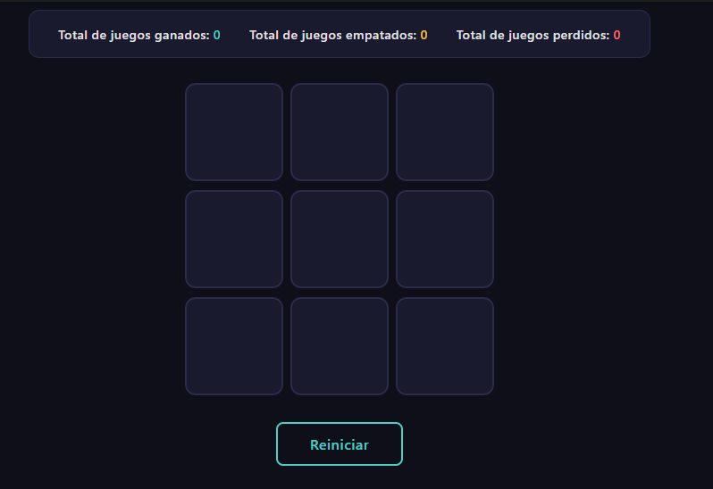
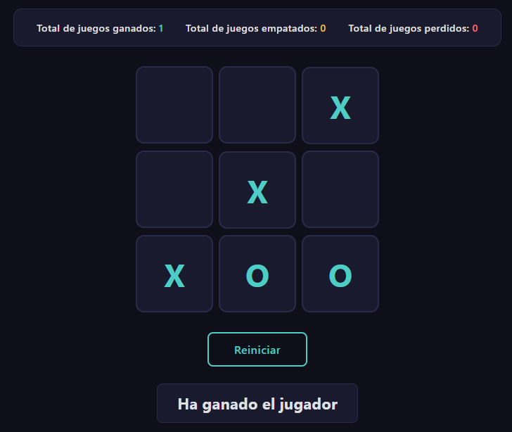

Captures de pantalla
El joc en funcionament.

Tauler inicial, abans de començar: marcador a zero i les nou caselles buides.

Victòria del jugador: tres X alineades, el missatge «Ha ganado el jugador» i el marcador de guanyades a 1.